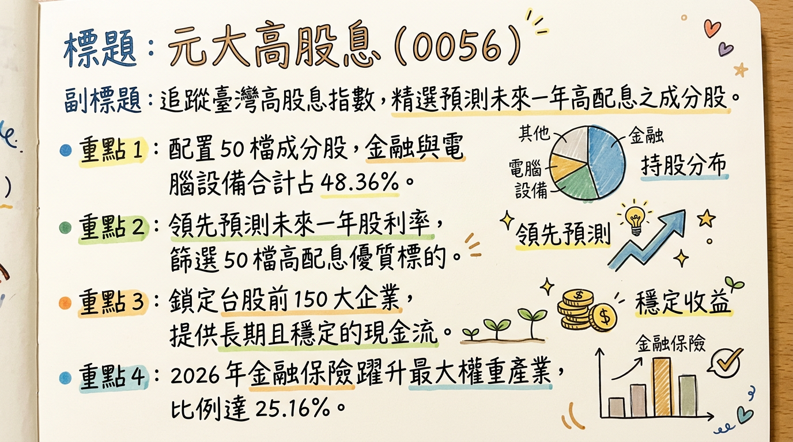
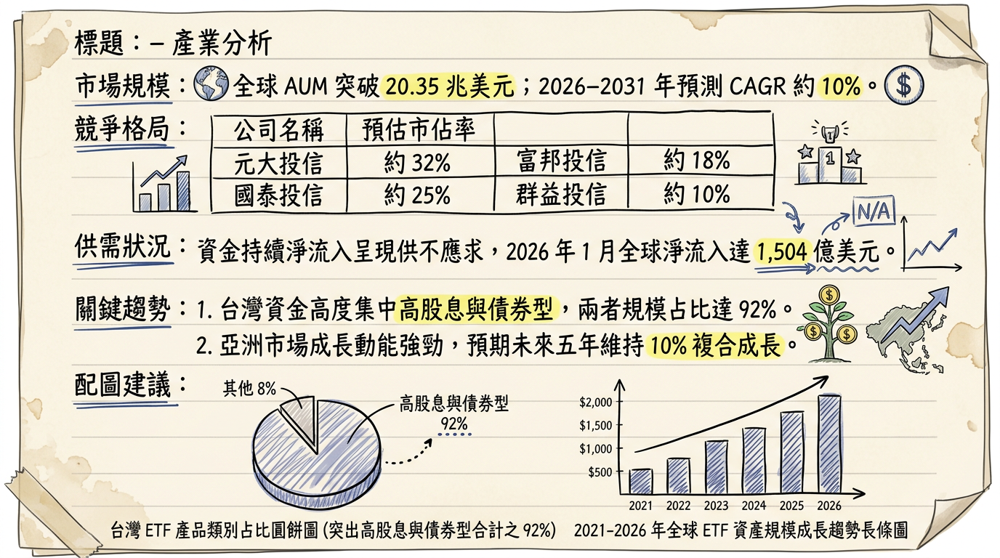
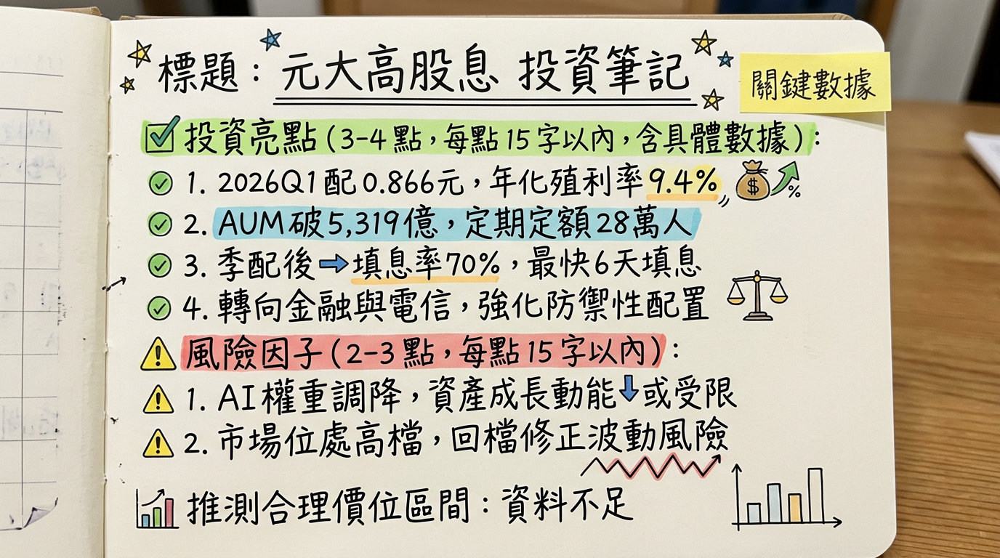

0056 元大高股息 深度研究報告
一句話摘要
「台股高股息 ETF 領航者，規模突破 5,000 億大關，2026 年邁向『防禦與成長』兼具的資產配置核心。」
公司概覽（ETF 性質與資產結構）
元大高股息（0056）由元大投信發行，追蹤「臺灣高股息指數」，核心選股邏輯為從臺灣 50 與中型 100 指數中，篩選「預測未來一年」現金股息殖利率最高的 50 檔成分股。
投資組合結構（截至 2026/03）
| 產業類別 | 佔比 (%) | 核心代表股（權重） |
|---|
| 上市金融保險業 | 25.16% | 中信金 (4.55%)、玉山金 |
| 電腦及週邊設備業 | 23.20% | 廣達 (4.18%)、緯創 |
| 半導體業 | 19.08% | 聯發科 (5.40%)、聯電 (4.92%) |
| 航運業 | 10.60% | 長榮、長榮航太 |
| 電子零組件/其他電子 | 15.43% | 日月光投控 |
| 其他（電機、通訊等） | 6.53% | 台灣大 |
核心競爭優勢
獨特的選股邏輯：採用「預測未來一年」殖利率，而非「過去已配發」數據，能更早納入 AI 伺服器等具備成長動能的轉型股。
規模經濟與高流動性：AUM 超過 5,200 億元，為全台高股息 ETF 之首，經理費率低至 0.30%。
穩定的填息紀錄：自改為季配息後，10 次配息中成功填息 7 次，歷史填息能力強。
強大的平準金儲備：截至 2025 年底，資本平準金約 6.97 元，可分配收益 4.73 元，具備支撐 2026 年穩定配息的底氣。
財務分析（資產規模與配息趨勢）
基金績效與規模趨勢表（2025-2026）
| 月份 | 資產規模 (AUM, 億) | 單月報酬率 (MoM) | 年增率 (YoY) | 備註 |
|---|
| 2025/11 | 4,910 | +1.25% | +10.2% | 市場回溫 |
| 2025/12 | 5,027 | +2.38% | +11.5% | 成分股調整生效 |
| 2026/01 | 5,148 | +4.69% | +11.9% | 2026 Q1 除息月 |
| 2026/02 | 5,541 | +7.63% | +15.8% | 規模創歷史新高 |
季度配息紀錄
- 2026 Q1：每單位配發 NT$ 0.866 (年化殖利率約 9.4%)。
- 2025 全年：累計配息 NT$ 3.872 (單次殖利率高達 11.01%)。
- 2024 全年：累計配息 NT$ 3.63。
法說會重點（管理層/元大投信 Guidance）
2026 經濟展望：預測台灣實質 GDP 成長為 4.11%，基本面支撐台股獲利成長。
配息策略：利用「收益平準金」制度穩定配息，目標 2026 年每季維持在 0.8 元以上高標。
防禦性配置：2026 年初顯著拉高金融股權重至 25%，因應電子股高位震盪風險，強化下檔支撐。
券商觀點（目標價與評等）
由於 ETF 為淨值連動，券商主要針對「合理淨值」與「殖利率目標」進行分析：
| 券商名稱 | 目標/建議區間 (NT$) | 評等 | 日期 | 核心論點 |
|---|
| 統一證券 | 38.0 - 41.5 | 增加配置 | 2026/02/26 | 預估全年配息率維持 9.1%~9.4% |
| 凱基證券 | 42.0 | 強力買進 | 2026/01/15 | 聯發科等權值股 AI 紅利發酵 |
| 富邦投顧 | 36.5 - 39.0 | 中立/區間 | 2025/12/11 | P/E 14.47 倍，建議年線附近佈局 |
財報深度分析
費用率與利潤結構
- 年度總費用率 (Expense Ratio)：2025 年為 0.57%（經理費 0.30% + 保管費 0.035% + 交易稅費）。
- 成分股獲利能力：加權平均 ROE 為 15.20%，投資組合 P/E 約 14.47 倍，顯示持股品質與估值尚屬合理。
存貨（成分股）調整分析
*
納入：玉山金 (2884)、長榮航太 (2645)、台灣大 (3045)。
* 剔除：中租-KY (5871)、東元 (1504)、臻鼎-KY (4958)。
- 戰略分析：此舉由「攻擊型」轉向「平衡型」，納入穩定現金流的電信與金融。
股權異動（受益人數與籌碼）
- 受益人數：截至 2026 年初突破 153.1 萬人。
- 法人籌碼：
*
自營商：2026/02/11 單日大買
82,607 張。
* 外資：2026/03/04 單日賣超 24,620 張（短期避險性賣壓）。
* 淨申購：2025 全年獲 1,441 億元 資金淨流入。
產業分析（競爭格局）
台灣高股息 ETF 龍頭對比 (2026/03)
| 比較項目 | 元大高股息 (0056) | 國泰永續高股息 (00878) | 群益台灣精選高息 (00919) |
|---|
| 規模 (AUM) | 5,541 億 (第一) | 約 4,700 億 | 約 3,700 億 |
| 選股邏輯 | 預測未來殖利率 | 追蹤過去三年穩定度 | 鎖定當下已宣告配息者 |
| 2026 策略 | AI 成長 + 金融防禦 | 高防禦金融債券感 | 極致殖利率追逐 |
近期催化劑（利多/利空事件）
*
2026/04 除息預期：市場預期配息將維持 0.866 元。
* 聯發科 AI ASIC 獲利：2026 Q2 預計貢獻超過 10 億美元營收。
* 金融股股利宣告：中信金預期 2026 配息挑戰 2.0 元以上。
*
地緣政治：中東局勢升溫推升油價至 100 美元，可能壓抑科技股估值。
* 外資調節：短期外資對台股避險賣壓導致淨值震盪。
⭐ 成長動能時間軸
- 2026 Q1：聯電與 Intel 合作 12 奈米案開始貢獻 NRE 收入。
- 2026/01/22：完成第一季配息，除息後 6 天填息（歷史數據參考）。
- 2026 Q2：聯發科 AI ASIC 切入 Google TPU 供應鏈並開始量產。
- 2026/06：台股傳統除權息旺季，預期 0056 權益收入大幅進帳。
- 2026 Q4：聯發科與 NVIDIA 合作之車用晶片 C-X1 正式出貨。
2026 展望（成長動能 vs 風險）
- 成長動能：AI 伺服器硬體紅利轉化為實際股息，加上金融股獲利回升，預期 2026 全年配息區間在 NT$ 3.5 - 3.8 元。
- 下行風險：前十大持股權重升至 39.33%，個股波動影響變大；高利率環境若維持過久，將壓抑高息資產估值。
投資結論
配息能見度高：帳上平準金充沛，預估 2026 年化殖利率可穩守 9% 以上。
產業配置均衡：25% 金融配比能有效抵禦 2026 年科技股可能的修正風險。
存股策略建議：對於月領 1 萬被動收入者，建議持有約 35-38 張。
建議買進區間：NT$ 35 - 37 為強勢支撐與高 CP 值買點；NT$ 42 以上則需注意殖利率下降之風險。
本報告由 AI 自動產生，資料來源為公開網路資訊，僅供參考，不構成投資建議。
產生時間：2026-03-05 09:45
📊 資訊卡


